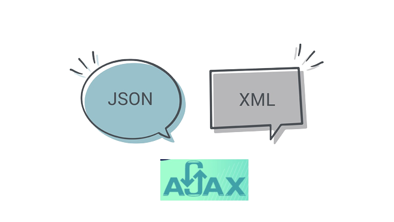

XML, JSON y AJAX
Karla Criollo

JSON (JavaScript Object Notation) y XML (Extensible Markup Language) son formatos populares para el intercambio de datos. JSON y XML son dos formas diferentes de almacenar datos en un ordenador.
AJAX significa JavaScript asíncrono y XML (Asynchronous JavaScript and XML). Es un conjunto de técnicas de desarrollo web que permiten que las aplicaciones web funcionen de forma asíncrona, procesando cualquier solicitud al servidor en segundo plano.